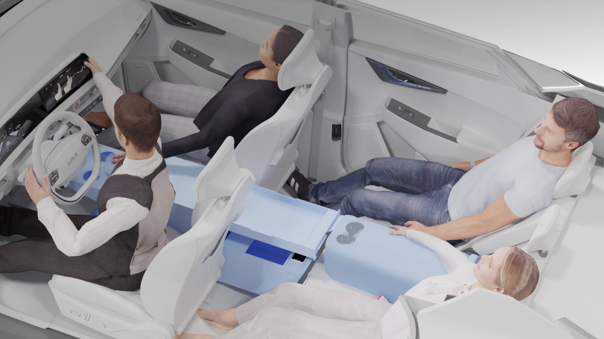
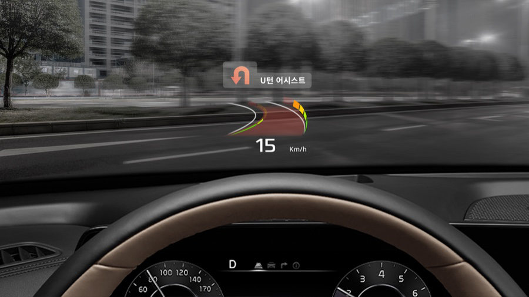
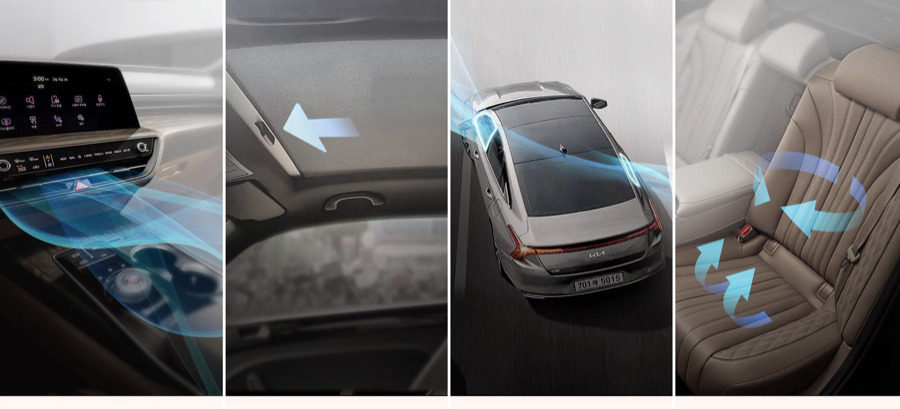
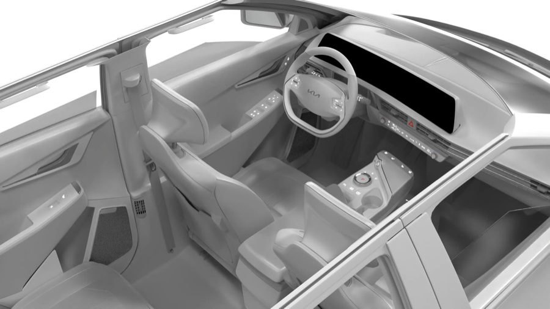
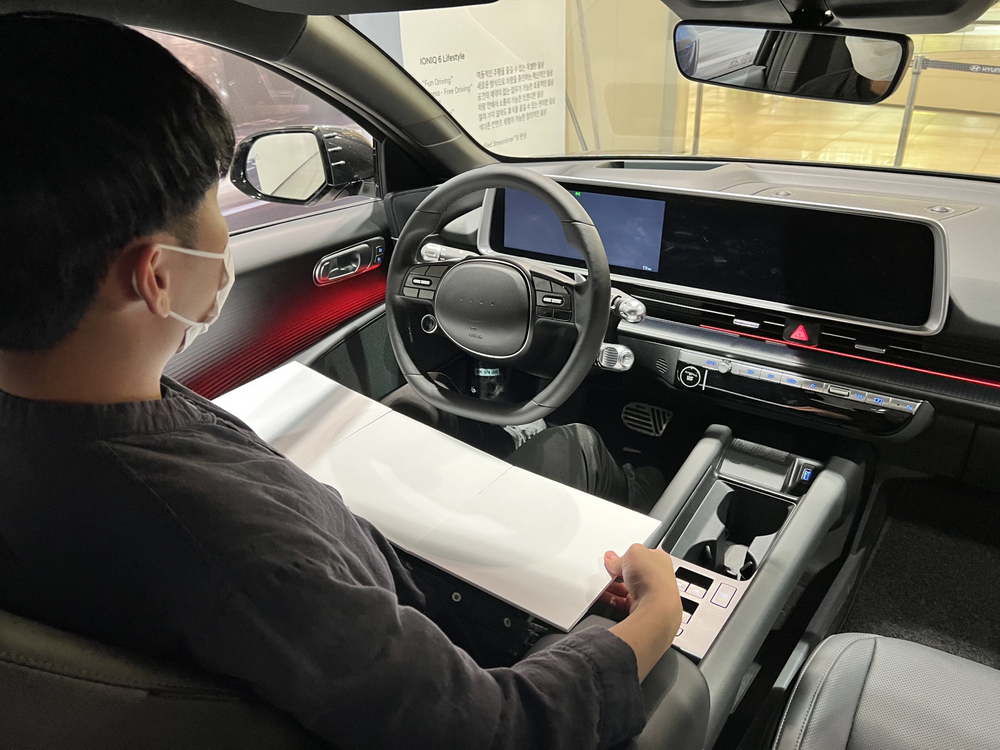
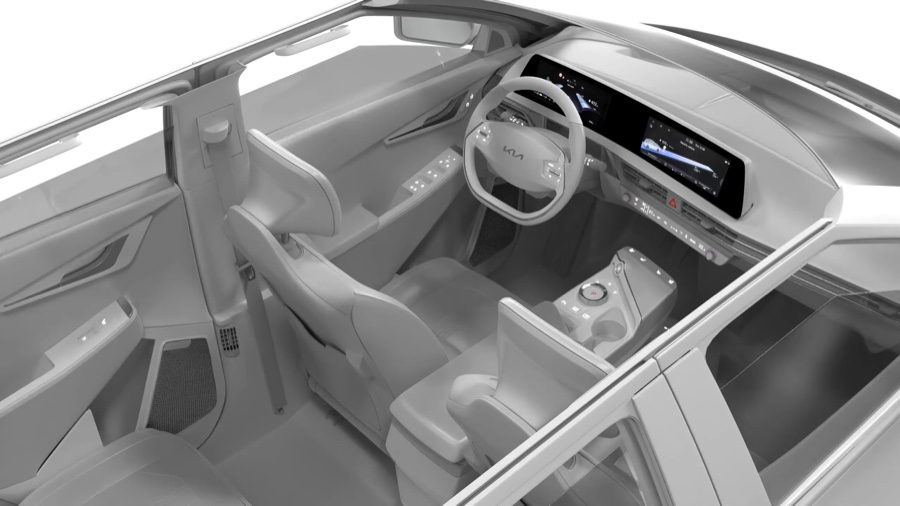
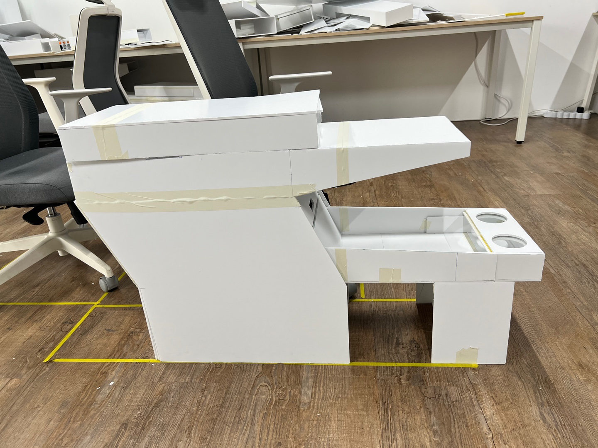
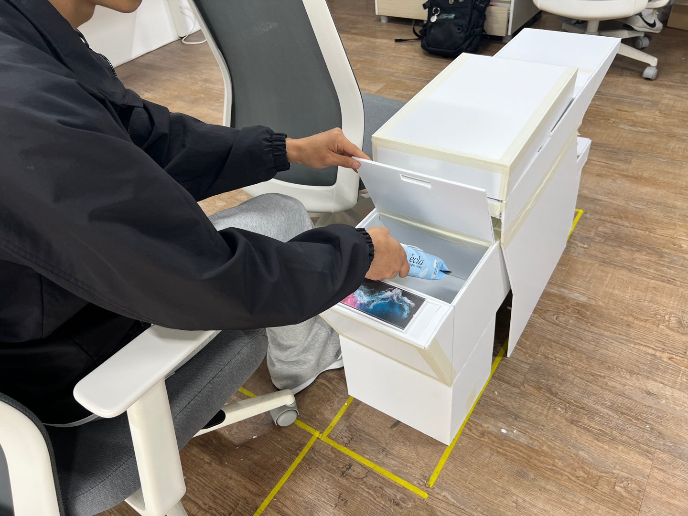
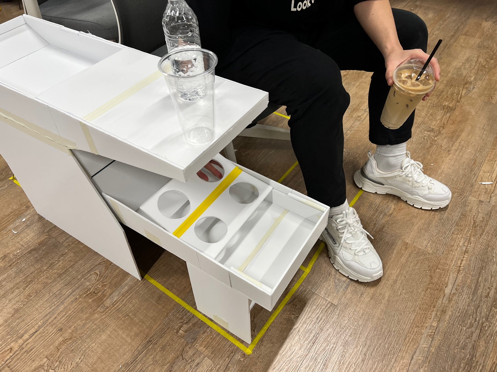
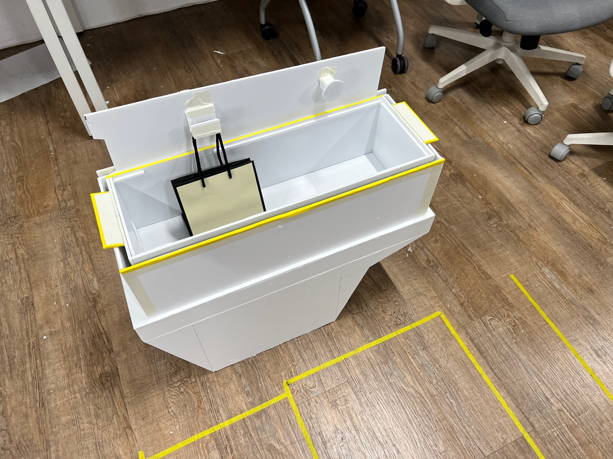

EV Sedan UX.
UX 아이템 10가지를 발굴해 시나리오는 영상으로, 실내 아이템은 폼보드 PoC로 만들어 직접 써 보며 검증했습니다.

- HMC 2022.09 — 11 Hyundai Product UX × 마크로밀엠브레인
- 10 UX Items 아이템 10가지 시나리오 영상 · 폼보드 PoC
써 보며 고른 전기세단 UX
EV sedan UX items, chosen by using them
커넥티드 서비스, 자동 공조, 주행·주차, 감시모드, 파워 도어, 인테리어 커스텀 모드, 확장형 센터콘솔, 테이블, 컵홀더, 트렁크 러기지박스까지 10가지 아이템을 발굴했습니다. 시나리오는 3D 애니메이션·영상으로, 실내 아이템 4종은 폼보드 PoC로 만들었고, 이 PoC는 마크로밀엠브레인의 실사용자 사용성 테스트에 쓰였습니다.
Ten items were developed: connected services, automatic climate, driving and parking, surveillance mode, power doors, interior custom modes, an expandable centre console, a table, cup holders and a trunk luggage box. Scenarios were shown as 3D animations and videos, and four interior items were built as foam-board PoCs, which were used in Macromill Embrain's usability tests with real users.

공조 폭염/한파 모드, HUD U턴 가이드, 충돌 전후 10초를 녹화하는 감시 모드, Relax · Cinema 커스텀 모드 같은 시나리오 아이템은 3D 애니메이션·영상으로 표현했습니다.
Scenario items such as heatwave/cold-snap climate modes, a HUD U-turn guide, a surveillance mode that records ten seconds before and after a collision, and Relax and Cinema custom modes were shown as 3D animations and videos.



실내 아이템 4종은 폼보드 PoC로 만들어 1·2열 배치를 재현하고 직접 사용해 보며 검증했습니다. 테이블은 애프터마켓 테이블 아이디어 3안을 도출해 실차에서 검증했습니다.
Four interior items were built as foam-board PoCs that reproduce the first- and second-row layout and were verified by using them. For the table, three aftermarket table ideas were developed and tested in a real car.

콘솔에서의 1열·2열 수납, 컵홀더, 무선충전, V2L 활용 아이디어를 제안했습니다. 확장 모드는 1열 중심 · 1·2열 공유 · 2열 중심 세 가지이고, 1:1 폼보드 PoC로 검증했습니다.
Ideas for front- and rear-row storage, cup holders, wireless charging and V2L in the console were proposed, with three extension modes (front-focused, shared, rear-focused) verified on a full-scale foam-board PoC.


Cup Holder
센터콘솔 하단 트레이 폴딩 컵홀더 아이템을 제안했습니다.
A folding cup holder in the tray under the centre console.
Trunk Luggage Box
트렁크 러기지박스의 컵홀더와 공간 분할 아이템을 도출하고 검증했습니다.
Cup-holder and space-dividing items for a trunk luggage box, developed and verified.


폼보드 PoC는 마크로밀엠브레인의 실사용자 사용성 테스트에 쓰였습니다.
The foam-board PoCs were used in Macromill Embrain's usability tests with real users.